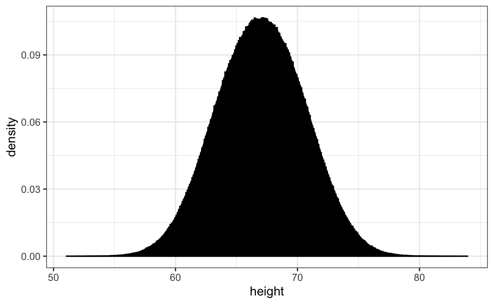

Capítulo 8 Cómo visualizar distribuciones de datos
Los datos numéricos a menudo se resumen con el valor promedio. Por ejemplo, la calidad de una escuela secundaria a veces se resume con un solo número: la puntuación promedio en una prueba estandarizada. Ocasionalmente, se incluye un segundo número: la desviación estándar. Por ejemplo, pueden leer un informe que indique que las puntuaciones fueron 680 más o menos 50 (la desviación estándar). El informe ha resumido un vector completo de puntuaciones con solo dos números. ¿Es esto apropiado? ¿Hay alguna información importante que no estamos considerando al ver este resumen en lugar de la lista completa?
Nuestro primer componente básico de visualización de datos es aprender a resumir listas de factores o vectores numéricos. Generalmente, la mejor manera de compartir o explorar este resumen es a través de la visualización de datos. El resumen estadístico más básico de una lista de objetos o números es su distribución. Una vez que un vector se haya resumido como una distribución, existen varias técnicas de visualización de datos para transmitir esta información de manera efectiva.
En este capítulo, primero discutiremos las propiedades de una variedad de distribuciones y cómo visualizar las distribuciones usando un ejemplo motivante de alturas de estudiantes. Luego, en la Sección 8.16, discutiremos las geometrías de ggplot2 para estas visualizaciones.
8.1 Tipos de variables
Trabajaremos con dos tipos de variables: categóricas y numéricas. Cada uno puede dividirse en otros dos grupos: las variables categóricas pueden ser ordinales o no, mientras que las numéricas pueden ser discretas o continuas.
Cuando cada entrada en un vector proviene de uno de un pequeño número de grupos, nos referimos a los datos como datos categóricos. Dos ejemplos sencillos son el sexo (masculino o femenino) y las regiones (noreste, sur, norte central, oeste). Algunos datos categóricos se pueden ordenar aunque no sean números, por ejemplo cuán picante es una comida (poco, medio, muy). En los libros de texto de estadísticas, los datos categóricos ordenados se denominan datos ordinales.
Ejemplos de datos numéricos son el tamaño de la población, las tasas de asesinatos y las alturas. Algunos datos numéricos se pueden tratar como ordenados categóricos. Podemos dividir aún más los datos numéricos en continuos y discretos. Las variables continuas son aquellas que pueden tomar cualquier valor, como las alturas, si se miden con suficiente precisión. Por ejemplo, un par de gemelos pueden medir 68.12 y 68.11 pulgadas, respectivamente. Los conteos, como el tamaño de la población, son discretos porque tienen que ser números redondos.
Tengan en cuenta que los datos numéricos discretos pueden considerarse ordinales. Aunque esto es técnicamente cierto, generalmente reservamos el término datos ordinales para variables que pertenecen a un pequeño número de grupos diferentes, y cada grupo tiene muchos miembros. En contraste, cuando tenemos muchos grupos con pocos casos en cada grupo, generalmente nos referimos a ellos como variables numéricas discretas. Entonces, por ejemplo, el número de paquetes de cigarrillos que una persona fuma al día, redondeado al paquete más cercano, se consideraría ordinal, mientras que el número real de cigarrillos se consideraría una variable numérica. Sin embargo, hay ejemplos que pueden considerarse tanto numéricos como ordinales cuando se trata de visualizar datos.
8.2 Estudio de caso: describiendo alturas de estudiantes
Aquí presentamos un nuevo problema motivante. Es artificial, pero nos ayudará ilustrar los conceptos necesarios para comprender las distribuciones.
Imaginen que tenemos que describir las alturas de nuestros compañeros de clase a ET, un extraterrestre que nunca ha visto humanos. Como primer paso, necesitamos recopilar datos. Para hacer esto, les pedimos a los estudiantes que indiquen sus alturas en pulgadas. Les pedimos que nos provean información sobre su sexo biológico porque sabemos que hay dos distribuciones diferentes por sexo. Recopilamos los datos y los guardamos en el set de datos heights:
Una forma de transmitir las alturas a ET es simplemente enviarle esta lista de 1,050 alturas. Sin embargo, hay formas mucho más efectivas de transmitir la información y, para lograr esto, nos ayudará a entender el concepto de distribuciones. Para simplificar la explicación, primero nos enfocamos en las alturas masculinas. Examinamos los datos de altura femenina en la Sección 8.14.
8.3 La función de distribución
Resulta que, en algunos casos, el promedio y la desviación estándar son prácticamente todo lo que necesitamos para comprender los datos. Aprenderemos técnicas de visualización de datos que nos ayudarán a determinar cuándo este resumen de dos números es apropiado. Estas mismas técnicas servirán como una alternativa para cuando dos números no son suficientes.
El resumen estadístico más básico de una lista de objetos o números es su distribución. La forma más sencilla de pensar en una distribución es como una descripción compacta de una lista con muchas entradas. Este concepto no debería ser nuevo para los lectores de este libro. Por ejemplo, con datos categóricos, la distribución simplemente describe la proporción de cada categoría única. El sexo representado en el set de datos de alturas es:
#>
#> Female Male
#> 0.227 0.773Esta tabla de frecuencia de dos categorías es la forma más simple de una distribución. Realmente no necesitamos visualizarla ya que un número describe todo lo que necesitamos saber: 23% son mujeres y el resto son hombres. Cuando hay más categorías, un diagrama de barras sencillo describe la distribución. Aquí hay un ejemplo con las regiones estatales de EE. UU.:
#> `summarise()` ungrouping output (override with `.groups` argument)
Este gráfico simplemente nos muestra cuatro números, uno para cada categoría. Usualmente usamos diagramas de barras cuando tenemos pocos números. Aunque este gráfico en particular no proporciona mucha más información que una tabla de frecuencias en sí, es un primer ejemplo de cómo convertimos un vector en un gráfico que resume de manera sucinta toda la información en el vector. Cuando los datos son numéricos, la tarea de mostrar distribuciones es más retante.
8.4 Funciones de distribución acumulada
Los datos numéricos que no son categóricos también tienen distribuciones. En general, cuando los datos no son categóricos, indicar la frecuencia de cada entrada no es un resumen efectivo, ya que la mayoría de las entradas son únicas. En nuestro estudio de caso, por ejemplo, mientras varios estudiantes reportaron una altura de 68 pulgadas, un estudiante indicó una altura de 68.503937007874 pulgadas y otro una altura 68.8976377952756 pulgadas. Suponemos que convirtieron sus alturas de 174 y 175 centímetros, respectivamente.
Los libros de texto de estadísticas nos enseñan que una forma más útil de definir una distribución de datos numéricos es definir una función que indique la proporción de los datos a continuación \(a\) para todos los valores posibles de \(a\). Esta función se llama la función de distribución acumulada, o CDF por sus siglas en inglés. En estadística, se usa la siguiente notación:
\[ F(a) = \mbox{Pr}(x \leq a) \]
Aquí vemos un gráfico de \(F\) para los datos de altura masculina:

Similar a lo que hace la tabla de frecuencias para datos categóricos, el CDF define la distribución de datos numéricos. En el gráfico, podemos ver que 16% de los valores son menos de 65, ya que \(F(66)=\) 0.164, o que 84% de los valores son menos de 72, ya que \(F(72)=\) 0.841, y así. De hecho, podemos informar la proporción de valores entre dos alturas, digamos \(a\) y \(b\), al computar \(F(b) - F(a)\). Esto significa que si enviamos este diagrama a ET, tendrá toda la información necesaria para reconstruir la lista completa. Parafraseando la expresión “una imagen vale más que mil palabras”, en este caso una imagen es tan informativa como 812 números.
Una nota final: debido a que los CDF pueden definirse matemáticamente, la palabra empírica se añade para distinguir cuando se usan los datos. Por lo tanto, utilizamos el término CDF empírico, o eCDF por sus siglas en inglés.
8.5 Histogramas
Aunque el concepto de CDF se discute ampliamente en los libros de texto de estadística, el gráfico no es muy popular en la práctica. La razón principal es que no transmite fácilmente características de interés como: ¿En qué valor se centra la distribución? ¿La distribución es simétrica? ¿Qué rangos contienen el 95% de los valores? Los histogramas son preferidos porque facilitan enormemente la respuesta a tales preguntas. Los histogramas sacrifican solo un poco de información para producir gráficos que son mucho más fáciles de interpretar.
La forma más sencilla de hacer un histograma es dividir el span de nuestros datos en compartimientos (bins en inglés) no superpuestos del mismo tamaño. Luego, para cada compartimiento, contamos el número de valores que se encuentran en ese intervalo. El histograma grafica estos conteos como barras con la base de la barra definida por los intervalos. A continuación tenemos el histograma para los datos de altura que dividen el rango de valores en intervalos de una pulgada: \([49.5, 50.5], [51.5,52.5],(53.5,54.5],...,(82.5,83.5]\)

Como pueden ver en la figura de arriba, un histograma es similar a un diagrama de barras, pero difiere en que el eje-x es numérico, no categórico.
Si le enviamos este diagrama a ET, inmediatamente aprenderá algunos detalles importantes sobre nuestros datos. Primero, el rango de datos es de 50 a 84 con la mayoría (más del 95%) entre 63 y 75 pulgadas. Además, las alturas son casi simétricas alrededor de 69 pulgadas. Por último, al sumar conteos, ET puede obtener una muy buena aproximación de la proporción de los datos en cualquier intervalo. Por lo tanto, el histograma anterior no solo es fácil de interpretar, sino que también ofrece casi toda la información contenida en la lista cruda de 812 alturas con aproximadamente 30 conteos, uno por cada compartimiento.
¿Qué información perdemos? Recuerden que todos los valores en cada intervalo se tratan de la misma manera cuando se calculan las alturas del compartimiento. Entonces, por ejemplo, el histograma no distingue entre 64, 64.1 y 64.2 pulgadas. Dado que estas diferencias son casi imperceptibles a la vista, las implicaciones prácticas son insignificantes y pudimos resumir los datos en solo 23 números.
Discutimos cómo codificar histogramas en la Sección 8.16.
8.6 Densidad suave
Los gráficos de densidad suave son estéticamente más atractivos que los histogramas. A continuación vemos un gráfico de densidad suave para nuestros datos de altura:

En este gráfico, ya no tenemos bordes afilados en los límites de intervalo y se han eliminado muchos de los picos locales. Además, la escala del eje-y cambió de conteos a densidad.
Para entender las densidades suaves, tenemos que entender las estimaciones, un tema que no abordamos hasta más tarde. Sin embargo, ofrecemos una explicación heurística para ayudarles a entender los conceptos básicos y así poder utilizar esta herramienta útil de visualización de datos.
El nuevo concepto principal que deben entender es que suponemos que nuestra lista de valores observados es un subconjunto de una lista mucho más grande de valores no observados. En el caso de las alturas, pueden imaginar que nuestra lista de 812 estudiantes varones proviene de una lista hipotética que contiene todas las alturas de todos los estudiantes varones en todo el mundo, medidos todos con mucha precisión. Digamos que hay 1,000,000 de estas medidas. Esta lista de valores tiene una distribución, como cualquier lista de valores, y esta distribución considerable es realmente lo que queremos transmitir a ET, ya que es mucho más general. Desafortunadamente, no podemos ver esa lista grandísima.
Sin embargo, podemos hacer una suposición que quizás nos ayude a aproximarla. Si tuviéramos 1,000,000 valores, medidos con mucha precisión, podríamos hacer un histograma con compartimientos muy, muy pequeños. La suposición es que si mostramos esto, la altura de los compartimientos consecutivos será similar. Esto es lo que queremos decir con suave: no tenemos grandes saltos en las alturas de los compartimientos consecutivos. A continuación tenemos un histograma hipotético con compartimientos de tamaño 1:

Entre más pequeños hacemos los compartimientos, más suave se vuelve el histograma. Aquí están los histogramas con ancho de compartimiento de 1, 0.5 y 0.1:

La densidad suave es básicamente la curva que atraviesa la parte superior de las barras del histograma cuando los compartimientos son muy, muy pequeños. Para que la curva no dependa del tamaño hipotético de la lista hipotética, calculamos la curva usando frecuencias en lugar de conteos:

Ahora, de vuelta a la realidad. No tenemos millones de medidas. En cambio, tenemos 812 y no podemos hacer un histograma con compartimientos muy pequeños.
Por lo tanto, hacemos un histograma, utilizando tamaños de compartimiento apropiados para nuestros datos y frecuencias de cómputo en lugar de conteos. Además, dibujamos una curva suave que pasa por la parte superior de las barras del histograma. Los siguientes gráficos muestran los pasos que conducen a una densidad suave:

Sin embargo, recuerden que suave (smooth en inglés) es un término relativo. De hecho, podemos controlar la suavidad de la curva cambiando el número de puntos en los compartimientos. Esta opción se conoce como bandwidth, span, window size o, en español, ventana de suavizado o parámetro de suavizado, y se puede ajustar en la función que calcula la curva de densidad suave. Aquí hay dos ejemplos que usan diferentes niveles de suavidad en el mismo histograma:
 Necesitamos tomar esta decisión con cuidado ya que las visualizaciones que resultan pueden cambiar nuestra interpretación de los datos. Debemos seleccionar un grado de suavidad que podamos defender como representativo de los datos subyacentes. En el caso de la altura, realmente tenemos razones para creer que la proporción de personas con alturas similares debería ser la misma. Por ejemplo, la proporción que es 72 pulgadas debería ser más similar a la proporción que es 71 que a la proporción que es 78 o 65. Esto implica que la curva debe ser bastante suave; es decir, la curva debería parecerse más al ejemplo de la derecha que al de la izquierda.
Necesitamos tomar esta decisión con cuidado ya que las visualizaciones que resultan pueden cambiar nuestra interpretación de los datos. Debemos seleccionar un grado de suavidad que podamos defender como representativo de los datos subyacentes. En el caso de la altura, realmente tenemos razones para creer que la proporción de personas con alturas similares debería ser la misma. Por ejemplo, la proporción que es 72 pulgadas debería ser más similar a la proporción que es 71 que a la proporción que es 78 o 65. Esto implica que la curva debe ser bastante suave; es decir, la curva debería parecerse más al ejemplo de la derecha que al de la izquierda.
Si bien el histograma es un resumen sin supuestos, la densidad suavizada se basa en algunos supuestos.
8.6.1 Cómo interpretar el eje-y
Tengan en cuenta que interpretar el eje-y de un gráfico de densidad suave no es obvio. Se escala para que el área bajo la curva de densidad se sume a 1. Si imaginan que formamos un compartimiento con una base de 1 unidad de longitud, el valor del eje-y nos indica la proporción de valores en ese compartimiento. Sin embargo, esto solo es cierto para compartimientos de tamaño 1. Para intervalos de otro tamaño, la mejor manera de determinar la proporción de datos en ese intervalo es calculando la proporción del área total contenida en ese intervalo. Por ejemplo, aquí vemos la proporción de valores entre 65 y 68:

La proporción de esta área es aproximadamente 0.3, lo que significa que aproximadamente 30% de las alturas masculinas están entre 65 y 68 pulgadas.
Al comprender esto, estamos listos para usar la densidad suave como resumen. Para este set de datos, nos sentimos bastante cómodos suponiendo suavidad y, por ende, compartiendo esta figura estéticamente agradable con ET, que puede usarla para comprender nuestros datos de alturas masculinas:

8.6.2 Densidades permiten estratificación
Como nota final, señalamos que una ventaja de las densidades suaves sobre los histogramas para fines de visualización es que las densidades facilitan la comparación de dos distribuciones. Esto se debe en gran parte a que los bordes irregulares del histograma añaden desorden. Aquí hay un ejemplo que compara las alturas masculinas y las femeninas:

Con el argumento correcto, ggplot automáticamente sombrea la región de intersección con un color diferente. Mostraremos ejemplos de código de ggplot2 para densidades en la Sección 9 así como en la Sección 8.16.
8.7 Ejercicios
1. En el set de datos murders, la región es una variable categórica y la siguiente es su distribución:
#> `summarise()` ungrouping output (override with `.groups` argument)
Redondeando al 5% más cercano, ¿qué proporción de los estados se encuentran en la región “North Central”?
2. ¿Cuál de los siguientes es cierto?
- El gráfico anterior es un histograma.
- El gráfico anterior muestra solo cuatro números con un diagrama de barras.
- Las categorías no son números, por lo que no tiene sentido graficar la distribución.
- Los colores, no la altura de las barras, describen la distribución.
3. El siguiente gráfico muestra el eCDF para las alturas masculinas:

Según el gráfico, ¿qué porcentaje de hombres son más bajos que 75 pulgadas?
- 100%
- 95%
- 80%
- 72 pulgadas
4. A la pulgada más cercana, ¿qué altura m tiene la propiedad de que la mitad de los estudiantes varones son más altos que m y la mitad son más bajos?
- 61 pulgadas
- 64 pulgadas
- 69 pulgadas
- 74 pulgadas
5. Aquí hay un eCDF de las tasas de asesinatos en todos los estados:

Sabiendo que hay 51 estados (contando DC) y basado en este gráfico, ¿cuántos estados tienen tasas de homicidio superiores a 10 por cada 100,000 personas?
- 1
- 5
- 10
- 50
6. Según el eCDF anterior, ¿cuál de las siguientes afirmaciones es cierta?
- Alrededor de la mitad de los estados tienen tasas de homicidios superiores a 7 por 100,000 y la otra mitad por debajo.
- La mayoría de los estados tienen tasas de homicidio de menos de 2 por 100,000.
- Todos los estados tienen tasas de asesinatos superiores a 2 por 100,000.
- Con la excepción de 4 estados, las tasas de asesinatos son inferiores a 5 por cada 100,000.
7. A continuación mostramos el histograma de alturas masculinas de nuestro set de datos heights:

Según este gráfico, ¿cuántos hombres hay entre 63.5 y 65.5?
- 10
- 24
- 34
- 100
8. ¿Aproximadamente qué porcentaje son más bajos que 60 pulgadas?
- 1%
- 10%
- 25%
- 50%
9. Según el siguiente gráfico de densidad, ¿aproximadamente qué proporción de estados de EE. UU. tiene poblaciones con más de 10 millones de personas?

- 0.02
- 0.15
- 0.50
- 0.55
10. A continuación hay tres gráficos de densidad. ¿Es posible que sean del mismo set de datos?

¿Cuál de las siguientes afirmaciones es cierta?
- Es imposible que sean del mismo set de datos.
- Son del mismo set de datos, pero los gráficos son diferentes debido a errores de código.
- Son del mismo set de datos, pero el primer y el segundo gráfico suavizan de menos y el tercero sobresuaviza.
- Son del mismo set de datos, pero el primero no está en la escala logarítmica, el segundo suaviza de menos y el tercero sobresuaviza.
8.8 La distribución normal
Los histogramas y los gráficos de densidad proveen excelentes resúmenes de una distribución. ¿Pero podemos resumir aún más? A menudo vemos el promedio y la desviación estándar utilizada como resumen estadístico: ¡un resumen de dos números! Para comprender cuáles son estos resúmenes y por qué se usan tanto, necesitamos comprender la distribución normal.
La distribución normal, también conocida como curva de campana y distribución Gausiana, es uno de los conceptos matemáticos más famosos de la historia. Una razón para esto es que se producen distribuciones aproximadamente normales en muchas situaciones, incluyendo las ganancias de juego, las alturas, los pesos, la presión arterial, las puntuaciones en las pruebas estandarizadas y los errores de medición experimentales. Hay explicaciones para esto y las describiremos más adelante. Aquí nos enfocamos en cómo la distribución normal nos ayuda a resumir los datos.
En vez de usar datos, la distribución normal se define con una fórmula matemática. Para cualquier intervalo \((a,b)\), la proporción de valores en ese intervalo se puede calcular utilizando esta fórmula:
\[\mbox{Pr}(a < x < b) = \int_a^b \frac{1}{\sqrt{2\pi}s} e^{-\frac{1}{2}\left( \frac{x-m}{s} \right)^2} \, dx\]
No necesitan memorizar o comprender los detalles de la fórmula. Sin embargo, recuerden que está completamente definida por solo dos parámetros: \(m\) y \(s\). El resto de los símbolos en la fórmula representan los extremos del intervalo que determinamos, \(a\) y \(b\) y las conocidas constantes matemáticas \(\pi\) y \(e\). Estos dos parámetros, \(m\) y \(s\), se conocen respectivamente como el promedio (o la media) y la desviación estándar, o SD por sus siglas en inglés, de la distribución.
La distribución es simétrica, centrada en el promedio y la mayoría de los valores (alrededor del 95%) están dentro de 2 SD del promedio. Así es como se ve la distribución normal cuando el promedio es 0 y la SD es 1:

El hecho de que la distribución está definida por solo dos parámetros implica que si la distribución de un set de datos se puede aproximar con una distribución normal, toda la información necesaria para describir la distribución se puede codificar en solo dos números: el promedio y la desviación estándar. Ahora vamos a definir estos valores para una lista arbitraria de números.
Para una lista de números contenidos en un vector x, el promedio se define como:
y la SD se define como:
que puede interpretarse como la distancia promedio entre los valores y su promedio.
Calculemos los valores para la altura de los varones que almacenaremos en el objeto \(x\):
Se pueden usar las funciones predefinidas mean y sd (tengan en cuenta que por razones que se explican en la Sección 16.2, sd divide por length(x)-1 en vez de length(x)) :
A continuación tenemos un gráfico de la densidad suave y la distribución normal con media = 69.3 y SD = 3.6 trazado como una línea negra con la densidad suave de nuestras alturas de estudiantes en azul:

La distribución normal parece ser una buena aproximación aquí. Ahora veremos cuán bien funciona esta aproximación para predecir la proporción de valores dentro de los intervalos.
8.9 Unidades estándar
Para los datos que se distribuyen aproximadamente normalmente, es conveniente pensar en términos de unidades estándar. La unidad estándar de un valor nos dice cuántas desviaciones estándar se alejan del promedio. Específicamente, para un valor x de un vector X, definimos el valor de x en unidades estándar como z = (x - m)/s con m y s el promedio y la desviación estándar de X, respectivamente. ¿Por qué es conveniente hacer esto?
Primero repasen la fórmula para la distribución normal y observen que lo que se está exponiendo es \(-z^2/2\) con \(z\) equivalente a \(x\) en unidades estándar. El hecho de que el máximo de \(e^{-z^2/2}\) es cuando \(z=0\) explica por qué la distribución ocurre en el promedio. También explica la simetría ya que \(- z^2/2\) es simétrico alrededor de 0. Además, noten que si convertimos los datos distribuidos normalmente a unidades estándar, podemos saber rápidamente si, por ejemplo, una persona es aproximadamente promedio ( \(z=0\)), entre los más altos ( \(z \approx 2\)), entre los más pequeños ( \(z \approx -2\)), o una ocurrencia extremadamente rara ( \(z > 3\) o \(z < -3\)). Recuerden que no importa cuáles sean las unidades originales, estas reglas aplican a cualquier dato que es aproximadamente normal.
En R, podemos obtener unidades estándar usando la función scale:
Ahora para ver cuántos hombres hay dentro de 2 SD del promedio, simplemente escribimos:
¡La proporción es aproximadamente el 95%, que es lo que predice la distribución normal! Para tener hasta más confirmación de que la aproximación es precisa, podemos usar gráficos Q-Q (quantile-quantile plots en inglés).
8.10 Gráficos Q-Q
Una forma sistemática de evaluar cuán bien se ajusta la distribución normal a los datos es verificar si las proporciones observadas y predecidas coinciden. En general, este es el acercamiento del gráfico Q-Q.
Primero, definimos los cuantiles teóricos para la distribución normal. En los libros de estadísticas usamos el símbolo \(\Phi(x)\) para definir la función que nos da la probabilidad de que una distribución normal estándar sea menos que \(x\). Así por ejemplo, \(\Phi(-1.96) = 0.025\) y \(\Phi(1.96) = 0.975\). En R, podemos evaluar \(\Phi\) utilizando la función pnorm:
La función inversa \(\Phi^{-1}(x)\) nos da los cuantiles teóricos para la distribución normal. Así por ejemplo, \(\Phi^{-1}(0.975) = 1.96\). En R, podemos evaluar el inverso de \(\Phi\) utilizando la función qnorm.
Tengan en cuenta que estos cálculos son para la distribución normal estándar por defecto (media = 0, desviación estándar = 1), pero también podemos definirlos para cualquier distribución normal. Podemos hacer esto usando los argumentos mean y sd en las funciones pnorm y qnorm. Por ejemplo, podemos usar qnorm para determinar cuantiles de una distribución con promedio y desviación estándar específicos:
Para la distribución normal, todos los cálculos relacionados con los cuantiles se realizan sin datos, de ahí el nombre de cuantiles teóricos. Pero los cuantiles se pueden definir para cualquier distribución, incluso una empírica. Entonces, si tenemos datos en un vector \(x\), podemos definir el cuantil asociado con cualquier proporción \(p\) como el \(q\) para el cual la proporción de valores por debajo de \(q\) es \(p\). Usando el código R, podemos definir q como el valor para el cual mean(x <= q) = p. Observen que no todo \(p\) tiene un \(q\) para el cual la proporción es exactamente \(p\). Hay varias maneras de definir el mejor \(q\) como se discute en la página de ayuda para la función quantile.
Como ejemplo rápido, para los datos de alturas masculinas, vemos que:
Entonces, alrededor del 50% son más bajos o iguales a 69 pulgadas. Esto implica que si \(p=0.50\), entonces \(q=69.5\).
La idea de un gráfico Q-Q es que si sus datos están bien aproximados por la distribución normal, los cuantiles de sus datos deberían ser similares a los cuantiles de una distribución normal. Para construir un gráfico Q-Q, hacemos lo siguiente:
- Definimos un vector de \(m\) dimensiones \(p_1, p_2, \dots, p_m\).
- Definimos un vector de cuantiles \(q_1, \dots, q_m\) para las proporciones \(p_1, \dots, p_m\) usando sus datos. Nos referimos a estos como los cuantiles muestrales (sample quantiles en inglés).
- Definimos un vector de cuantiles teóricos para las proporciones \(p_1, \dots, p_m\) para una distribución normal con el mismo promedio y desviación estándar que los datos.
- Graficamos los cuantiles muestrales versus los cuantiles teóricos.
Construyamos un diagrama Q-Q usando el código R. Comiencen definiendo el vector de proporciones.
Para obtener los cuantiles de los datos, podemos usar la función quantile así:
Para obtener los cuantiles teóricos de distribución normal con promedio y SD correspondiente, utilizamos la función qnorm:
Para ver si coinciden o no, los graficamos uno contra el otro y dibujamos la línea de identidad:

Noten que este código es mucho más sencillo si usamos unidades estándar:
sample_quantiles <- quantile(z, p)
theoretical_quantiles <- qnorm(p)
qplot(theoretical_quantiles, sample_quantiles) + geom_abline()El código anterior se incluye para ayudar a describir los gráficos Q-Q. Sin embargo, en la práctica es más fácil usar el código ggplot2 descrito en la Sección 8.16:
heights %>% filter(sex == "Male") %>%
ggplot(aes(sample = scale(height))) +
geom_qq() +
geom_abline()Mientras que para la ilustración anterior usamos 20 cuantiles, el valor por defecto de la función geom_qq es utilizar la misma cantidad de cuantiles como datos.
8.11 Percentiles
Antes de continuar, definamos algunos términos que se usan comúnmente en el análisis exploratorio de datos.
Percentiles son casos especiales de cuantiles que se usan comúnmente. Los percentiles son los cuantiles que se obtienen al configurar el \(p\) a \(0.01, 0.02, ..., 0.99\). Denominamos, por ejemplo, el caso de \(p=0.25\) el cuartilo inferior, ya que nos da un número para el cual el 25% de los datos están por debajo. El percentil más famoso es el 50, también conocido como la mediana.
Para la distribución normal, la mediana y el promedio son los mismos, pero generalmente este no es el caso.
Otro caso especial que recibe un nombre son los cuartiles, que se obtienen al configurar \(p=0.25,0.50\) y \(0.75\).
8.12 Diagramas de caja
Para presentar los diagramas de caja (boxplots en inglés) volveremos a los datos de asesinatos de EE. UU.. Supongamos que queremos resumir la distribución de la tasa de asesinatos. Usando la técnica de visualización de datos que hemos aprendido, podemos ver que la aproximación normal no aplica aquí:

En este caso, el histograma anterior o un gráfico de densidad suave serviría como un resumen relativamente sucinto.
Ahora supongamos que los que están acostumbrados a recibir solo dos números como resúmenes nos piden un resumen numérico más compacto.
Aquí Tukey ofreció algunos consejos. Primero, recomendó proveer un resumen de cinco números compuestos por el rango junto con los cuartiles (los percentiles 25, 50 y 75). Además, Tukey sugirió ignorar los valores atípicos al calcular el rango y, en su lugar, graficarlos como puntos independientes. Ofreceremos una explicación detallada de los valores atípicos más adelante. Finalmente, recomendó que graficáramos estos números como una “caja” con “bigotes” así:

con el cuadro definido por los percentiles 25% y 75% y los bigotes mostrando el rango. La distancia entre estos dos se llama el rango intercuartil. Los dos puntos son valores atípicos según la definición de Tukey. La mediana se muestra con una línea horizontal.
A partir de este simple gráfico, hoy conocido como un diagrama de caja, sabemos que la mediana es de aproximadamente 2.5, que la distribución no es simétrica y que el rango es de 0 a 5 para la gran mayoría de los estados con dos excepciones.
Discutimos cómo crear diagramas de caja en la Sección 8.16.
8.13 Estratificación
En el análisis de datos, a menudo dividimos las observaciones en grupos según los valores de una o más variables asociadas con esas observaciones. Por ejemplo, en la siguiente sección dividimos los valores de altura en grupos según una variable de sexo: hembras y varones. Llamamos a este procedimiento estratificación y nos referimos a los grupos resultantes como estratos.
La estratificación es común en la visualización de datos porque a menudo estamos interesados en cómo la distribución de variables difiere entre los diferentes subgrupos. Veremos varios ejemplos a lo largo de esta parte del libro. Revisaremos el concepto de estratificación cuando aprendamos regresión en el Capítulo 17 y en la parte de machine learning del libro.
8.14 Estudio de caso: descripción de alturas de estudiantes (continuación)
Usando el histograma, los gráficos de densidad y los gráficos Q-Q, nos hemos convencido de que los datos de altura masculina se aproximan bien con una distribución normal. En este caso, le damos a ET un resumen muy sucinto: las alturas masculinas siguen una distribución normal con un promedio de 69.3 pulgadas y una SD de 3.6 pulgadas. Con esta información, ET tendrá una buena idea de qué esperar cuando conozca a nuestros estudiantes varones. Sin embargo, para proporcionar una imagen completa, también debemos proporcionar un resumen de las alturas femeninas.
Aprendimos que los diagramas de caja son útiles cuando queremos comparar rápidamente dos o más distribuciones. Aquí vemos las alturas para varones y hembras:

El diagrama inmediatamente demuestra que los varones son, en promedio, más altos que las hembras. Las desviaciones estándar parecen ser similares. Pero, ¿la aproximación normal también funciona para los datos de altura femenina recopilados por la encuesta? Esperamos que sigan una distribución normal, al igual que los varones. Sin embargo, los gráficos exploratorios revelan que la aproximación no es tan útil:

Vemos algo que no observamos para los varones: el gráfico de densidad tiene una segunda protuberancia. Además, el gráfico Q-Q muestra que los puntos más altos tienden a ser más altos de lo esperado por la distribución normal. Finalmente, también vemos cinco puntos en el gráfico Q-Q que sugieren alturas más bajas de lo esperado para una distribución normal. Al nuevamente informar a ET, es posible que necesitemos proporcionar un histograma en lugar de solo el promedio y la desviación estándar para las alturas femeninas.
Sin embargo, releemos la cita de Tukey y nos damos cuenta de que hemos notado lo que no esperábamos ver. Si observamos otras distribuciones de altura femenina, encontramos que están bien aproximadas con una distribución normal. Entonces, ¿por qué nuestras alumnas son diferentes? ¿Es nuestra clase un requisito para el equipo femenino de baloncesto? ¿Hay una proporción pequeña de mujeres que dicen ser más altas de lo que son? Otra explicación, quizás más probable, es que en el formulario en que los estudiantes ingresaron sus alturas, FEMALE era el sexo predeterminado y algunos varones ingresaron sus alturas, pero olvidaron cambiar la variable de sexo. En cualquier caso, la visualización de datos ha ayudado a descubrir una posible falla en nuestros datos.
Con respecto a los cinco valores más pequeños, noten que estos valores son:
heights %>% filter(sex == "Female") %>%
top_n(5, desc(height)) %>%
pull(height)
#> [1] 51 53 55 52 52Debido a que estas son alturas autoreportadas, una posibilidad es que las estudiantes quisieron ingresar 5'1", 5'2", 5'3" o 5'5".
8.15 Ejercicios
1. Defina variables que contengan las alturas de varones y hembras de esta manera:
library(dslabs)
data(heights)
male <- heights$height[heights$sex == "Male"]
female <- heights$height[heights$sex == "Female"]¿Cuántas medidas tenemos para cada una?
2. Supongamos que no podemos hacer un gráfico y queremos comparar las distribuciones una al lado de otra. No podemos simplemente enumerar todos los números. En cambio, veremos los percentiles. Cree una tabla de cinco filas que muestre female_percentiles y male_percentiles con los percentiles 10, 30, 50, …, 90 para cada sexo. Luego, cree un data frame con estas dos como columnas.
3. Estudie los siguientes diagramas de caja que muestran los tamaños de población por país:

¿Qué continente tiene el país con el mayor tamaño de población?
4. ¿Qué continente tiene la mediana de tamaño poblacional más grande?
5. ¿Cuál es la mediana del tamaño poblacional de África al millón más cercano?
6. ¿Qué proporción de países en Europa tienen poblaciones menos de 14 millones?
- 0.99
- 0.75
- 0.50
- 0.25
7. Si utilizamos una transformación logarítmica, ¿qué continente de los anteriores tiene el mayor rango intercuartil?
8. Cargue el set de datos de altura y cree un vector x con solo las alturas masculinas:
¿Qué proporción de los datos está entre 69 y 72 pulgadas (más alto que 69, pero más bajo o igual a 72)? Sugerencia: use un operador lógico y mean.
9. Supongamos que lo único que sabe sobre los datos es el promedio y la desviación estándar. Use la aproximación normal para estimar la proporción que acaba de calcular. Sugerencia: comience calculando el promedio y la desviación estándar. Luego use la función pnorm para predecir las proporciones.
10. Note que la aproximación calculada en la pregunta nueve está muy cerca del cálculo exacto en la primera pregunta. Ahora realice la misma tarea para valores más atípicos. Compare el cálculo exacto y la aproximación normal para el intervalo (79,81]. ¿Cuántas veces mayor es la proporción real que la aproximación?
11. Aproxime la distribución de hombres adultos en el mundo como distribución normal con un promedio de 69 pulgadas y una desviación estándar de 3 pulgadas. Usando esta aproximación, calcule la proporción de hombres adultos que miden 7 pies de alto o más, conocidos como seven footers. Sugerencia: use la función pnorm.
12. Hay alrededor de mil millones de hombres entre las edades de 18 y 40 en el mundo. Use su respuesta a la pregunta anterior para estimar cuántos de estos hombres (de 18 a 40 años) miden siete pies de altura o más en el mundo.
13. Hay alrededor de 10 jugadores de la Asociación Nacional de Baloncesto (NBA) que miden 7 pies de altura o más. Usando la respuesta a las dos preguntas anteriores, ¿qué proporción de los seven footers del mundo, entre 18 a 40 años, están en la NBA?
14. Repita los cálculos realizados en la pregunta anterior para la altura del baloncelista Lebron James: 6 pies y 8 pulgadas. Hay alrededor de 150 jugadores que son al menos tan altos.
15. Al responder a las preguntas anteriores, descubrimos que no es raro que un jugador de siete pies se convierta en jugador de la NBA. Entonces, ¿que sería una crítica justa de nuestros cálculos?
- La práctica y el talento son lo que hacen a un gran jugador de baloncesto, no la altura.
- La aproximación normal no es apropiada para alturas.
- Como se observa en la pregunta 10, la aproximación normal tiende a subestimar los valores atípicos. Es posible que haya más seven footers de lo que predijimos.
- Como se observa en la pregunta 10, la aproximación normal tiende a sobreestimar los valores atípicos. Es posible que haya menos seven footers de lo que predijimos.
8.16 Geometrías ggplot2
En el capitulo 7, presentamos el paquete ggplot2 para la visualización de datos. Aquí demostramos cómo generar gráficos relacionados con distribuciones, específicamente los gráficos que se muestran anteriormente en este capítulo.
8.16.1 Diagramas de barras
Para generar un diagrama de barras (barplots en inglés) podemos usar la geometría geom_bar. Por defecto, R cuenta los casos en cada categoría y dibuja una barra. Aquí vemos el diagrama de barras para las regiones de Estados Unidos.

A menudo ya tenemos una tabla con una distribución que queremos presentar como diagrama de barras. Aquí tenemos un ejemplo de tal tabla:
data(murders)
tab <- murders %>%
count(region) %>%
mutate(proportion = n/sum(n))
tab
#> region n proportion
#> 1 Northeast 9 0.176
#> 2 South 17 0.333
#> 3 North Central 12 0.235
#> 4 West 13 0.255Ya no queremos que geom_bar cuente, sino simplemente grafique una barra a la altura proporcionada por la variable proportion. Para esto necesitamos proveer x (las categorías) y y (los valores) y usar la opción stat="identity".

8.16.2 Histogramas
Para generar histogramas utilizamos geom_histogram. Al revisar la página de ayuda para esta función, vemos que el único argumento requerido es x, la variable para la cual construiremos un histograma. No usamos la x porque sabemos que es el primer argumento.
El código se ve así:
Si ejecutamos el código anterior, nos da un mensaje:
stat_bin()utilizandobins = 30. Elija un mejor valor conbinwidth.
Anteriormente utilizamos un tamaño de compartimiento de 1 pulgada, por lo que el código se ve así:
Finalmente, si por razones estéticas queremos añadir color, usamos los argumentos descritos en la página de ayuda. También añadimos etiquetas y un título:
heights %>%
filter(sex == "Female") %>%
ggplot(aes(height)) +
geom_histogram(binwidth = 1, fill = "blue", col = "black") +
xlab("Male heights in inches") +
ggtitle("Histogram")
8.16.3 Gráficos de densidad
Para crear una densidad suave, usamos geom_density. Para hacer un gráfico de densidad suave con los datos que anteriormente visualizamos como un histograma, podemos usar este código:
Para rellenar con color, podemos usar el argumento fill.

Para cambiar la suavidad de la densidad, utilizamos el argumento adjust para multiplicar el valor por defecto por ese adjust. Por ejemplo, si queremos que el parámetro de suavizado sea el doble de grande, usamos:
8.16.4 Diagramas de caja
La geometría para crear diagramas de caja es geom_boxplot. Como ya hemos discutido, los diagramas de caja son útiles para comparar distribuciones. Por ejemplo, a continuación vemos las alturas mostradas anteriormente para las mujeres, pero aquí en comparación con los hombres. Para esta geometría, necesitamos los argumentos x como las categorías y los argumentos y como los valores:

8.16.5 Gráficos Q-Q
Para gráficos Q-Q usamos la geometría geom_qq. De la página de ayuda, aprendemos que necesitamos especificar el sample (aprenderemos sobre samples en un capítulo posterior). Aquí tenemos el gráfico Q-Q para alturas de varones:

Por defecto, la variable muestral se compara con una distribución normal con un promedio de 0 y una desviación estándar de 1. Para cambiar esto, utilizamos el argumento dparams según la página de ayuda. Para añadir una línea de identidad simplemente asignen otra capa. Para líneas rectas, usamos la función geom_abline. La línea por defecto es la línea de identidad (pendiente = 1, intercepto = 0).
params <- heights %>% filter(sex=="Male") %>%
summarize(mean = mean(height), sd = sd(height))
heights %>% filter(sex=="Male") %>%
ggplot(aes(sample = height)) +
geom_qq(dparams = params) +
geom_abline()Otra opción aquí es escalar los datos primero y luego hacer un gráfico Q-Q contra la distribución normal estándar.
8.16.6 Imágenes
No hemos tenido que usar imágenes para los conceptos descritos en este capítulo, pero los usaremos en la Sección 10.14, así que presentamos las dos geometrías utilizadas para crear imágenes: geom_tile y geom_raster. Se comportan de manera similar; para ver cómo difieren, consulten la página de ayuda. Para crear una imagen en ggplot2, necesitamos un data frame con las coordenadas x e y, así como los valores asociados con cada uno de estos. Aquí tenemos un data frame:
Tengan en cuenta que esta es la versión tidy de una matriz, matrix(1:120, 12, 10). Para graficar la imagen, usamos el siguiente código:
Con estas imágenes, a menudo querrán cambiar la escala de color. Esto se puede hacer a través de la capa scale_fill_gradientn.
x %>% ggplot(aes(x, y, fill = z)) +
geom_raster() +
scale_fill_gradientn(colors = terrain.colors(10))
8.16.7 Gráficos rápidos
En la sección 7.13 presentamos qplot como una función útil cuando necesitamos hacer un diagrama de dispersión rápido. También podemos usar qplot para hacer histogramas, diagramas de densidad, diagramas de caja, gráficos Q-Q y más. Aunque no provee el nivel de control de ggplot, qplot es definitivamente útil, ya que nos permite hacer un gráfico con un pequeño fragmento de código.
Supongamos que tenemos las alturas femeninas en un objeto x:
Para hacer un histograma rápido podemos usar:
La función adivina que queremos hacer un histograma porque solo proveemos una variable. En la sección 7.13 vimos que si le damos dos variables a qplot , automáticamente crea un diagrama de dispersión.
Para hacer un gráfico Q-Q rápido, tienen que usar el argumento sample. Recuerden que podemos añadir capas tal como lo hacemos con ggplot.
Si proveemos un factor y un vector numérico, obtenemos un gráfico como el que vemos abajo. Tengan en cuenta que en el código estamos utilizando el argumento data. Como el data frame no es el primer argumento en qplot, tenemos que usar el operador de punto.
También podemos seleccionar una geometría específica mediante el uso del argumento geom. Entonces, para convertir el diagrama anterior en un diagrama de caja, usamos el siguiente código:
También podemos usar el argumento geom para generar un gráfico de densidad en lugar de un histograma:
Aunque no tanto como con ggplot, tenemos cierta flexibilidad para mejorar los resultados de qplot. Mirando la página de ayuda, vemos varias formas en que podemos mejorar el aspecto del histograma anterior. Por ejemplo:

Nota técnica: La razón por la que usamos I("black") es porque queremos que qplot trate "black" como un carácter en lugar de convertirlo en un factor. Este es el comportamiento por defecto dentro de aes, que se llama internamente aquí. En general, la función I se usa en R para decir “manténgalo como está”.
8.17 Ejercicios
1. Ahora vamos a usar la función geom_histogram para hacer un histograma de las alturas en el set de datos height. Al leer la documentación para esta función, vemos que requiere solo una asignación, los valores que se utilizarán para el histograma. Haz un histograma de todos los gráficos.
¿Cuál es la variable que contiene las alturas?
sexheightsheightheights$height
2. Ahora cree un objeto ggplot usando el pipe para asignar los datos de altura a un objeto ggplot. Asigne height a los valores de x a través de la función aes.
3. Ahora estamos listos para añadir una capa para hacer el histograma. Utilice el objeto creado en el ejercicio anterior y la función geom_histogram para hacer el histograma.
4. Cuando ejecutamos el código en el ejercicio anterior recibimos la advertencia:
stat_bin() utilizando bins = 30. Elija un mejor valor con binwidth.
Utilice el argumento binwidth para cambiar el histograma creado en el ejercicio anterior para usar compartimientos de tamaño de 1 pulgada.
5. En lugar de un histograma, vamos a hacer un gráfico de densidad suave. En este caso, no crearemos un objeto, sino haremos y mostraremos el gráfico con una línea de código. Cambie la geometría en el código utilizado anteriormente para hacer una densidad suave en lugar de un histograma.
6. Ahora vamos a hacer un gráfico de densidad para varones y hembras por separado. Podemos hacer esto usando el argumento group. Asignamos grupos a través del mapeo estético, ya que cada punto necesita un grupo antes de hacer los cálculos necesarios para estimar una densidad.
7. También podemos asignar grupos a través del argumento color. Esto tiene el beneficio adicional de que utiliza el color para distinguir los grupos. Cambie el código anterior para usar color.
8. Además, podemos asignar grupos a través del argumento fill. Esto tiene el beneficio adicional de que usa colores para distinguir los grupos así:
Sin embargo, aquí la segunda densidad se traza sobre la primera. Podemos hacer que las curvas sean más visibles mediante el uso de alpha blending para añadir transparencia. Establezca el parámetro alfa a 0.2 en la función geom_density para hacer este cambio.